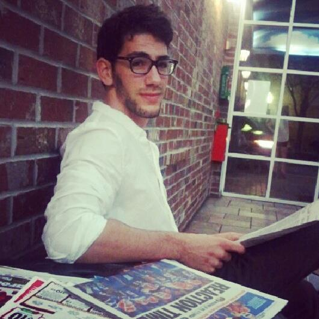

About Me
My name is Eitan Schapsis
Let me first explain what I mean by "Public Relations, Politically Charged"
I found my passion in January 2013 when I was hiking through desert and snow and meeting all types of different people. A trip back to Israel was all it took to help me narrow down what I wanted to do. The University of Florida helped me choose public relations, but when my journey came to an end, it was all clear: The Middle East.
Having left Israel at a very young age, I re-entered with a more mature mind, more interested in politics and culture. I decided to minor in Jewish Studies and create a professional blog that concentrates on merging what I learn in my PR field with what's currently going on in Middle Eastern politics. I reference multiple news sources so as to not be biased and also offer the unique PR perspective that can often be critical in politics.
I believe that life is about exploring passions, which includes hobbies!
An avid martial artist, I've practiced a wide array of disciplines including Kung Fu, Sanshou, Brazilian Jiu Jitsu, Karate and Kickboxing. I love the exercise and the rush you can get while also learning skills that can benefit you for life.
On a completely opposite note, I also like to keep a garden of herbs and small plants on neighborhood's backyard window sills. For pictures, go to my Google+!
Thank you for visiting my website. If you would like to reach me, please feel free to email.